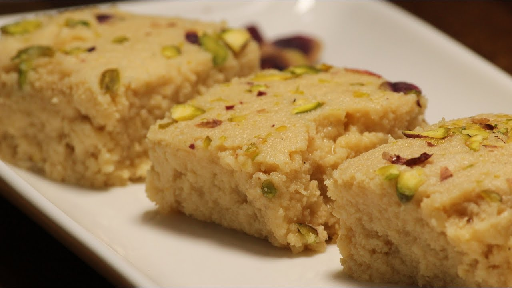

Kalakand-recipe

Ingredients of Kalakand
- 20 gms Cashew
- 20 gram Almonds
- 20 gram Pistachio
- 400 gram Paneer
- 180 gram Full Fat Milk
- 1 medium spoon Green Cardamom Powder
- 171 gram Sweet Condensed Milk
- For Garnish
- 6 gram Pistachio
- 10 gram Almonds
How to Make Kalakand
- Add Cashews, Almonds, Pistachio and Paneer to the Jar
- Grind the ingredients : Blade speed 12 for 10 seconds & Blade speed 11 for 10 secondsAdd the Milk and Green Cardamom Powder
- Cook for 15 minutes at 95℃ with the blade speed set to Slow Stir. Add Condensed Milk- Mix in all the ingredients at Speed 1 for 5 seconds
- Cook the mixture together for 15 minutes at 95℃ with the blade speed set to Stir
To set the Kalakand
- Grease a tray or pan with ghee.
- Top with chopped almonds and pistachio.
- Pour the Kalakand mixture and refrigerate for 4 hours.
Serving
Once set, cut into cubes and serve.